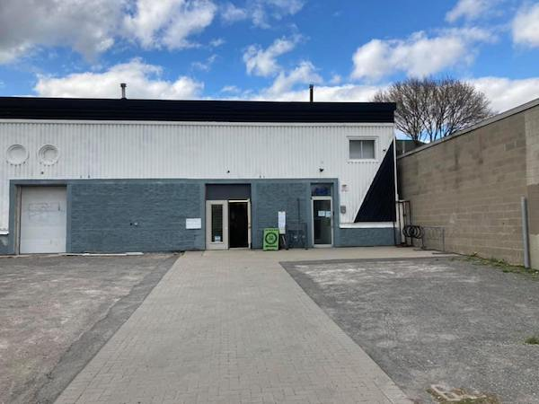

Where to find us
445 Catherine Street, Unit 1, Ottawa, Ontario.
The archived site describes the entrance as just west of the Percy Street bike path, with a parking area in front of the building.
Find the workshop and plan your visit.

445 Catherine Street, Unit 1, Ottawa, Ontario.
The archived site describes the entrance as just west of the Percy Street bike path, with a parking area in front of the building.
Hours are awaiting confirmation. The original location page contains COVID-era hours from 2021; those have intentionally not been reproduced as current.
Confirm current bicycle sales, parts sales, donation drop-off and DIY repair schedules before visiting.
For current hours, pricing and availability, please check with the shop before visiting.
Plan your visit ↗